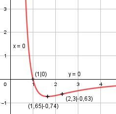

Aufgabe 159 4 1 f(x) = ----- * ln (---) x2 x f(x) = 4 * x-2 * ln x-1 x ≠ 0 Produktregel erste Ableitung: u = 4 * x-2, u' = -8 * x-3 1 v = ln x-1 = -ln x, v' = - --- x 1 f'(x) = -8 * x-3 * (-ln x) + (- ---) * 4 * x-2 x f'(x) = 8 * ln x * x-3 - 4 * x-3 f'(x) = x-3 * (8 * ln x - 4) Produktregel zweite Ableitung: u = x-3, u' = -3 * x-4 8 v = 8 * ln x - 4, v' = --- x 8 f''(x) = -3 * x-4 * (8 * ln x - 4) + --- * x-3 x f''(x) = -24 * x-4 * ln x + 12 * x-4 + 8 * x-4 f''(x) = x-4 * (20 - 24 * ln x) 20 - 24 * ln x f''(x) = ----------------- x4 Zur Beurteilung, ob f'''(x) ≠ 0: (Begründung siehe Aufgabe 105) 24 u = 20 - 24 * ln x, u' = - ---- x 24 - ---- u' x 24 f'''(x) = --- = ------- = - ---- ≠ 0 für x ≠ 0 v x4 x5 1 Wegen ln --- muss x > 0 sein. x Polstelle: Für x --> 0 geht 4 1 f(x) = ----- * ln (---) --> ∞ x2 x x = 0 Definitionsbereich: 0 < x < ∞ Waagerechte Asymptote: 4 1 Für x --> ∞ geht f(x) = ----- * ln (---) --> 0 x2 x Wertebereich: f(x) ist dann am kleinsten, wenn x = 1,65 (Extrempunkt) und f(1,65) = -0,74 --> -0,74 ≤ f(x) < ∞ Symmetrie zur y-Achse bzw. zum Punkt (0|0): 4 1 f(-x) = -------- * ln ---- (-x)2 -x 4 1 f(-x) = ------ * ln ---- ≠ f(x) x2 -x --> keine Achsensymmetrie 4 1 -f(-x) = -(----- * ln ----) = f(x) x2 -x --> keine Punktsymmetrie Nullstellen: f(x) = 0 4 1 ---- * ln (---) |*x2 x2 x 4 * ln x-1 = 0 -4 * ln x = 0 |:(-4) ln x = 0 x = e0 = 1 N(1|0) Schnittpunkt mit der y-Achse: x = 0 x = 0 liegt nicht im Definitionsbereich --> kein Schnittpunkt Extrempunkte: f'(x) = 0 8 * ln x - 4 = 0 |+4 8 * ln x = 4 |:8 ln x = 0,5 x = e0.5 = 1,65 4 1 f(1,65) = ------- * ln (-----) = -0,74 1,652 1,65 20 - 24 * ln 1,65 f''(1,65) = -------------------- > 0 1,654 --> Tiefpunkt (1,65|-0,74) Wendepunkte: f''(x) = 0 20 - 24 * ln x ---------------- = 0 |*x4 x4 20 - 24 * ln x = 0 |+24 * ln x 24 * ln x = 20 |:24 5 ln x = --- 6 x = e5/6 = 2,3, 4 1 f(2,3) = ------ * ln (-----) = -0,63 2,32 2,3 WP(2,3|-0,63) Graph:
